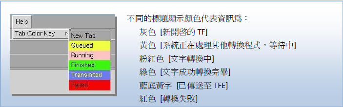
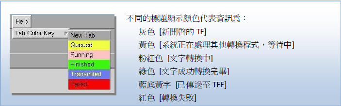
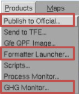

1. 系統總覽
1.1 文件目的
在新舊代系統轉換期間系統眾多且複雜，透過此文件介紹各類特報編輯與發布的工具，期待其可熟悉操作。
1.3.2 流程概述
本系統涵蓋「監測」、「編輯」與「發布」三大階段。由 iwfc 啟動監測，經由 GFE 與 HS 製作產品，最後透過 TFE 向外發布。其中要注意的是，目前預報中心產製的特報基礎皆以格點預報或鄉鎮為基礎，概念上則為先編輯特報格點、鄉鎮區域(A1、A2、Warngen)，再透過審核系統(TFE、TFE2)送出。
※ GFE 未產製｢熱帶性低氣壓特報｣格點，須直接從 TFE 系統編輯。
| 特報種類 | 特報格點 | TFE系統 | |
|---|---|---|---|
| (解除)豪大雨特報 | A1 | → | TFE2 |
| 濃霧特報 | A1 | → | TFE2 |
| 低溫特報 | A2(V.18) | → | TFE2 |
| 強風特報 | A2(V.23) | → | TFE2 |
| 高溫資訊 | A2(V.18) | → | TFE2 |
| 熱帶性低氣壓特報 | X | TFE | |
| 長浪即時訊息 | X | TFE2 | |
| 大雷雨即時訊息 | Warngen | → | X |
| 颱風強風告警 | Warngen | → | X |
1.4 名詞釋義
- iwfc： Intelligent Weather Forecast Center
- GFE： Graphics Generation Editor
- HS： Hazard Services
- TFE： Text Forecast Editor
- HazardBot： 自動化危害指引機器人
總覽流程
1.3.1 系統流程圖

🗯️ 劇烈天氣定義
| 特報種類 | 燈號 | 縮寫 | 定義 |
|---|---|---|---|
| 低溫特報 | 黃色燈號 | YC.Y | 平地最低氣溫攝氏 10 度下。 |
| 低溫特報 | 橙色燈號(10) | DC.Y | 攝氏 10 度 以下且連續 24 小時攝氏 12 度以下。 |
| 低溫特報 | 橙色燈號(6) | BC.Y | 平地最低氣溫攝氏 6 度以下 |
| 低溫特報 | 紅色燈號 | NC.Y | 平地氣溫連續 24 小時 攝氏 6 度以下。 |
| 高溫資訊 | 黃色燈號 | YH.Y | 氣溫達攝氏 36 度以上 |
| 高溫資訊 | 橙色燈號(36) | OY.Y | 氣溫達攝氏 36 度以 上，且持續 3 天以 上 |
| 高溫資訊 | 橙色燈號(38) | OR.Y | 氣溫達攝氏 38 度以上。 |
| 高溫資訊 | 紅色燈號 | RH.Y | 氣溫達攝氏 38 度以 上，且持續 3 天以 上。 |
| 強風特報 | 黃色燈號 | YW.Y | 觀測或預測平均風達 6 級以上或陣風達 8 級 以上。 |
| 強風特報 | 橙色燈號 | OW.Y | 觀測或預測平均風達 9 級以上或陣風達 11 級 以上。 |
| 強風特報 | 紅色燈號 | RW.Y | 觀測或預測平均風達 12 級以上或陣風達 14 級以上。 |
| 豪大雨特報 | 大雨特報 | HR.Y | 24 小時累積雨量達 80 毫米以上，或時雨量達 40 毫米以上之降雨現 象。 |
| 豪大雨特報 | 豪雨特報 | EH.Y | 24 小時累積雨量達 200 毫米以上，或 3 小時累積雨量達 100 毫米以上 之降雨現象。 |
| 豪大雨特報 | 大豪雨特報 | TR.Y | 24 小時累積雨量達 350 毫米以上，或 3 小時累積雨量達 200 毫米以上 之降雨現象。 |
| 豪大雨特報 | 超大豪雨特報 | ET.Y | 24 小時累積雨量達 500 毫米以上之降雨現象。 |
| 濃霧特報 | 濃霧特報 | 水平能見度低(等)於 200 公尺以下。 | |
| 長浪即時訊息 | 長浪即時訊息 | 當臺灣地區沿岸資料 浮標觀測到的波浪平均周期大於 8 秒，且 示性波高大(等)於 1.5 公尺時。 | |
| 大雷雨即時訊息 | 大雷雨即時訊息 | 以伴隨閃電之群聚旺盛對流為一雷雨事件以不同編號區別標示，依對流生命期採不定時更新方式提供最新即時訊息 | |
| 強風告警訊息 | 強風告警訊息 | 「颱風強風告警」是本署於颱風警報期間針對即將遭受颱風劇烈強風 影響之陸上地區提供之即時告警訊息 |
🌧️ 編輯流程_豪大雨及濃霧特報_A1 GFE
介面登入方式
GHG 特報系統使用的是陸地預報的 GFE 程式 (2.5km 解析度 ) ，進入特報介面的方式有兩種：
- A(左圖) — 在登入 GFE 時點選中間欄位的 Hazards
- B(右圖) — 在原為陸地預報或海面預報的操作介面上，按照以下操作順序，畫面出現 Hazard 的參數格點後，即可開始使用！
操作順序：Weather Element→Weather Element Groups → Hazards


特報格點製作：
介面上顯示Hazards 特報編輯因子之後，從視窗最上方 Hazards→MakeHazrd_tw 開啟下方頁面製作
Step1: 選擇特報種類: 先點下方特報種類，其中「豪大雨特報」 選項分為山區、海岸、平地三種地圖提供繪製。
- < 縣市 > 用以選擇各縣市，豪大雨特報、低溫特報、濃霧特報皆使用之。
- < 山區 > 用以選擇各縣市山區，只在豪大雨特報使用。
- < 海岸 > 用以選擇恆春半島，只在豪大雨特報使用。
Step2: 選擇豪大雨特報的等級：一次僅能選一種，如需製作多個種類，可於Step5選擇”製 作特報格點”後，再繼續製作下一個等級特報
Step3: 選擇區域：按下滑鼠左鍵拖曳即可選取區域(亮紅色處)；在亮紅色處點一下即可取消選取 。
注意!! 縣市地圖易漏畫新竹市及嘉義市、山區地圖易遺漏台北市山區及台南市山區,離島地區也較不易選取,建議可將視窗最大化後再行操作。
Step4：選擇時間：此處顯示的時間為本地時間(L)
Step5：按下最左邊的「製作特報格點」，本視窗不會關閉,可繼續編輯或疊加其他特報格點。
如不再製作其他特報，可選擇中間的「製作特報格點/關掉」
回到GFE格點編輯畫面，可以看到時間軸上出現不同種類特報的暫存格點，此時仍可在此格點上直接使用”Asign工具”編輯，直到每個種類都符合最終需求。
Step6：Merge 各類特報格點至Hazards 格點，才算完成喔！


Step7：檢視格點畫面,確認區域無誤後即可按下存檔鍵

產品產製：
製作官方格點：Products → Publish to Official (有做這一步才會被存到官方Official !)
!! 如果沒有執行這個步驟，下一步驟文字轉換器(TF)的”source”(格點資料來源)要記得選”Fcst”


進行文字轉換：開啟文字轉換器(TF)
- 選擇Products→Hazard → 豪(大)雨特報 Ver.3.0/濃霧特報 Ver.2
- 選單開啟後，點選齒輪

- 開始執行程式
豪大雨 選單說明如下：

- A. 選擇「發布」特報的原因:可複選,預設值若不使用需自行點掉。發「解除」報時不理會此欄位。
- B. 選擇「解除」特報的原因:可複選,預設值若不使用需自行點掉。發「發布」報時不理會此欄位。
- C. 選擇警語:警語可複選,當發布「解除」報時可不理會此欄位。
- D. 選擇是否在概況內文中提及雨量資訊[此功能尚未銜接,預設選NO]
- E. 選擇是否顯示警戒區域目前實際觀測雨量[此功能尚未銜接,預設不顯示]
- F. 選擇警戒區域描述方式:「概括性」為北中南東的描述;「縣市或連續區域」轉出某縣市以北以南
濃霧特報 選單說明如下：

- A. 選擇影響原因(預設為不選)
- B. 選擇警語
- C. 選擇概況描述方式
- D. 手動輸入觀測資料:發生地區(可複選)、發生時間(格式–hh:mm)、能見度(預設200公尺)
進行文字預覽
以上欄位點選完畢，按OK執行並稍後數秒，標籤變為綠色即成功轉換完畢
 

產品傳送至 TFE2
請檢查內容是否有誤,若無誤,請按「Transmit」鍵傳送資料至GHGMonitor, 同時會跳出另一視窗(下方右圖)、再按一次「Transmit」將資料送至TFE。
解除豪大雨特報篇
濃霧特報不需要發布「解除報」,只要放著到特報結束時間,格點即會消失;豪(大)雨特報解除時須發布「解除報」。
文字轉換程式會自動判斷前後的格點狀態,只要格點是從「有」變「無」,TF就可自動轉出解除報的內容。因此解除特報的流程很簡單:
(使特報格點消失)→(MergeHazards)→_存檔→Publish to Official→_執行Formatter Launcher
使特報格點消失的方法有兩種：
- a. 若只有Hazards格點裡只有單種特報,可直接於時間軸上按右鍵 Delete Grid
- b. 若同時存在兩種以上特報,可先分離特報格點(SeparateHazard)後,於時間軸上按右鍵 Delete Grid移除要解除的特報種類
刪除格點並存檔後，再進入Formatter Launcher，開啟豪大雨特報的選單，只需要選擇解除的欄位，按下OK並送出即可。

其他編輯技巧：
改變時間：
直接在時間軸上處理格點即可。
- 延長特報： 以滑鼠中鍵點選格點後拖曳至想要的結束時間。
- 縮短特報： 在格點上欲設定結束時間的位置按右鍵，選取 Split Grid，然後在後面不要的那段格點上按右鍵選 Delete Grid 即可。

改變區域
編修特報圖形的方式主要有兩種：
- 在格點上繪圖編輯
可直接在 Hazard 格點 ( 已 Merge) 上編輯，或 Separate Hazard 後，單獨編輯各項特報，最後再合併。
建議編輯工具有： Pencil Tool 、選取區域直接 Assign Value 、或使用 Pickup Value (指定 Value 種類 ) - 透過特報工具編輯
- [ 新增種類 ] 開啟 MakeHazard_tw 編輯，步驟同「製作新特報」一節所述。( 格點會自動 Separate)
- [ 移除單種特報 ] 使用 RemoveHazard ，點選想刪除的特報種類即可，可複選，但不可復原，請小心使用！
- [ 新增或減少區域 ] 執行 SeparateHazard 後，點選想編輯的格點，開啟 MakeHazard_tw ，可在圖中看見現有的區域，直接進行編輯即可。
※ 特報格點除了用 MakeHazard_tw 製作、選區域 Assign Value 外，也可以直接用手繪製。但要注意的是，格點需佔區域面積的 10% 以上，才會判斷該區有特報發生。
GFE 特報常用的選單
特報格點製作：
 |
Hazards | MakeHazard_tw | 製作各種特報格點 |
| MergeHazards | 將不同種類特報格點合併 ( 存檔前必做程序 ) | ||
| RemoveHazard | 移除單種特報格點 ( 需在已 Merge 狀態下使用 ),( 無法復原，請小心！ ) | ||
| SeparateHazards | 分離各種特報格點 |
特報產品製作與檢視：
|  | Product | Publish to Official | 將已存檔資訊發布至官方 |
| Formatter Launcher | 特報文字轉換器，將格點資料轉為文字內容 | ||
| GHG Monitor | 檢視及監控特報狀態，具有提醒警示功能 |
編輯區域選取：
 |
Edit Areas | Island | 可選取澎湖、金門、馬祖地區 |
| New_Taiwan_County | 可選取台灣本島各縣市 | ||
| Taiwan_GHG | 可選取各縣市之山區或平地 | ||
| Taiwan_ Ground&Mountain | 可選取台灣本島平地或山區、台灣本島不同區域 ( 一週預報分區 ) 之平地或山區 | ||
| WeekFcstArea | 可選取各區域 ( 一週預報分區 ) |
豪大雨特報分區：
目前山區使用500公尺為高度分界定義;地形高度≤500m爲平地,地形高度>500m為山區。
台灣分為各縣市之平地、山區，以及北海岸、恆春半島、綠島、蘭嶼。
- 僅有平地沒有山區的縣市：彰化縣、嘉義市、新竹市
- 「北海岸」包括:淡水區、三芝區、石門區、金山區、萬里區、瑞芳區、貢寮區、雙溪區
- 「恆春半島」包括:車城鄉、牡丹鄉、滿洲鄉、恆春鎮、獅子鄉、枋山鄉
| 縣市 | 平地 | 山區 | 特殊地理區包含鄉鎮區 |
|---|---|---|---|
| 臺北市 | V | V | |
| 新北市 | V | V | |
| 桃園市 | V | V | |
| 新竹市 | V | ||
| 新竹縣 | V | V | |
| 基隆市 | V | V | |
| 宜蘭縣 | V | V | |
| 苗栗縣 | V | V | |
| 臺中市 | V | V | |
| 彰化縣 | V | ||
| 南投縣 | V | V | |
| 雲林縣 | V | V | |
| 嘉義市 | V | ||
| 嘉義縣 | V | V | |
| 臺南市 | V | V | |
| 高雄市 | V | V | |
| 屏東縣 | V | V | |
| 花蓮縣 | V | V | |
| 臺東縣 | V | V | |
| 北海岸 | x | x | 淡水區、三芝區、石門區、金山區、萬里區、瑞芳區、貢寮區、雙溪區 |
| 恆春半島 | x | x | 車城鄉、牡丹鄉、滿洲鄉、恆春鎮、獅子鄉、枋山鄉 |
| 綠島 | x | x | |
| 蘭嶼 | x | x |
🌡️ 編輯流程_高溫資訊、低溫特報
開啟A2 (18版)
於即時席對面電腦( 各席位A2電腦版本 )開啟 A2(18版)介面，選擇Hazards_config

編輯格點
方法一：使用工具呼叫HazardBot
1. 開啟工具
點選介面最上方 Hazards → HazardGuidanceAPITool

2. 設定並執行工具
於左上角頁籤選擇欲發布的特報種類
調整設定值產出特報格點(預設為最常使用的門檻及該時間對應報別時間區間)
工具執行期間，右下角會呈現 running Hazard Tool 字樣，稍待幾秒後完成製作


執行工具(Run 或 Run/Dismiss，後者會順便關掉工具)，產生各燈號時間及區域。
* 目前工具產製出的各燈號區段是一樣的，取最早與最晚出現的時間
3. 完成格點
確定燈號時間與區域之後，點選Hazards → MergeHazard
存檔(中間圖示磁碟片圖案)
發布成官方格點，Products → Publish to Official

方法二：手繪區域(通常用在HazardBot無法使用的時候)
1. 選擇區域
從EditArea選擇要發布特報的區域，下圖以鄉鎮清單為例
如要多選，工具欄設定切換為”聯集”(下圖右)


2. 設定時間
區域確定之後，先在時間編輯區內製造一個空格點，在格點上按滑鼠中鍵往右拉，可延長格點時間

3. 設定特報種類
在地圖最上面按右鍵，可叫出”Set Pickup Value ”選單
選擇要發布的特報及燈號，按下Assign，前面選取的區域就會被指定為該特報種類。
用這個方法不必合併特報格點，但要注意每一個鄉鎮，同一種特報只能存在一個燈號喔!


4. 存檔(藍色磁碟片圖案)並”Publish to Official”完成官方格點


製作產品
1. 開啟文字轉換器
叫出文字轉換器 (Products → Formatter Launcher...)

2. 選擇要轉換的特報種類
低溫特報：低溫特報鄉鎮版本 ver4.
高溫資訊：高溫資訊鄉鎮版本 ver2.

3. 進行格點轉文字
叫出選單之後，按下畫面上的齒輪，出現設定選單
文字轉換完成後，確認區域及描述無誤，即可按”Save Draft”→ Transmit(下圖左下角藍色方框) ，稍等幾秒後完成傳送

發布產品
檔案傳送之後，TFE2 即可讀取對應的特報，可在TFE2調整文字並發布產品。
TFE2 編輯流程請參考：發布流程_TFE2 (點擊可切換頁籤)
🌬️ 編輯流程_強風特報
開啟 A2 Hazard Services 介面
依照正常程序(點這裡看S.O.P.)開啟AWIPS2後，確認自己所在site為「CWA」(而非CWAM，確認方式文件中的環境確認」)
在AWIPS2 介面上點選 H 圖示，開啟Hazard Services，並在下方的icon 選擇對應特報  (強風特報)，叫出對應的地圖、製作特報的設定值。
(強風特報)，叫出對應的地圖、製作特報的設定值。

前置工作
清空事件列表，刪除介面上還存在的事件
操作：左鍵點選事件(變成藍底，可按著Shift複選)，一次處理多個事件狀態
- 情境一：還未發布過的用"Delete This"或"Delete 1 Selected"刪除，如果一次選擇很多，則會出現"Delete All"、"Delect 2 Seleted"...

- 情境二：已發布事件(ISSUED)
需要先"End"，並依照「發布產品流程」結束此事件，按右鍵可另開分頁檢視圖檔


製作特報事件
可選擇用HazardBot自動產製或手繪
方法一：用HazardBot 產製各燈號事件
點選鐵鎚圖案旁邊的小箭頭，點選對應的工具 (確定是否有先切換到該特報的設定)

執行之後產生特報格點，每一個燈號為一個事件，並可從AlertViz(下圖)中讀取API執行的細節


方法二：框選特報區域(影片連結)


微調特報事件之影響時間、範圍
調整時間：
直接鍵入數字無法作用時，可用scroll bar拉動調整

調整區域
‼️目前在表單上調整區域時只會調整產品，無法回饋於地圖上

產品(xml, json)產製
前一步驟按下Preview之後，開啟描述選單，選擇 Continue 之後可顯示Json及Xml預覽畫面，並可於此介面進入發布流程，issue之後就會傳送到TFE2


⚡ 編輯流程_大雷雨即時訊息
開啟 A2 Hazard Services 介面
依照正常程序開啟AWIPS2後，確認自己所在site為「CWA」(而非CWAM，確認方式文件中的「環境確認」)
在AWIPS2 介面上點選 H 圖示，開啟Hazard Services，並在下方的icon 選擇對應特報  。
。
繪製發布區域
疊加參考指引：可疊加雷達回波及Scan 相關資訊，介面操作與D2D操作方式相同
繪製區域：
開啟HS選單之後，在下方的*旁箭頭可選擇繪製方式(建議使用Polygon或freehand Polygan，如使用Polygan最後一個點要按右鍵結束)。

圈選後跳出選單，選擇「大雷雨即時訊息」，選擇後會出現下圖右的表單，在此可設定此事件的延續時間(Duration)。

區域選單分為鄉鎮與沿海的頁籤，分別顯示陸地與沿海區域；可用於微調，但要注意Polygon可能會不一致，因此建議還是要回到地圖上調整。

按下選單下方的”Preview”後跳出文字訊息選單，須分別選擇”陸地”與”沿海”的描述。
選擇「致災性短延時強降雨(PWS)」及「颱風強風告警(PWS)」會自動勾選”Publish with CB”(發布細胞廣播)，可取消勾選。
在文字訊息選單右下角點選Okay後，則進入產品預覽畫面。

預覽產品
預覽畫面<一>：顯示發送訊息內的描述，以及是否發布CB

預覽畫面<二>：預覽畫面<一>按下”Continue後”，轉出 Cap 檔發布的內容，可以再檢查一次區域

發布產品
預覽CAP檔案之後，按下視窗最下方的Issue/Publish，跳出下圖左側<STOP>畫面，在這個畫面按下藍色按鈕 ”Issue/Publish” 就會正式發送到官網!!
如果還需要調整，按Cancel回到編輯介面。
注意發布的標號是否跟Console一致

其他操作技巧
未發布過的特報都可以點選後(變成藍底才表示有選到!)，按右鍵"Delete This"或"Delete 1 Selected"刪除，如果一次選擇很多，則會出現"Delete All"、"Delect 2 Seleted"...，刪除方式與其他特報相同
已發布過的特報會呈現在介面上，但無法再次編輯
👀 發布流程_TFE2
開啟方式
- 網址(署內安內外接可開啟)： tfe.cwa.gov.tw
- 登入方式：預報中心LDAP
介面說明
- 左上角選擇”特報分類”，點選欲發布的特報
- 預設開啟時為 AWIPS系統傳送的檔案

如要匯入其他席位存檔資料，須點選右上角”載入存檔資料”

確認產品無誤
確認發布時間、有效時間、特報內容、特報區域


儲存資料(綠色按鈕)
發布產品
- 操作介面右側
- 儲存資料(綠色按鈕) ，存檔後發布產品按鈕會變成藍色
- 發布產品
- 至官網確認產品上架並呈現正確資料